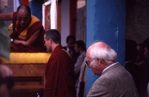
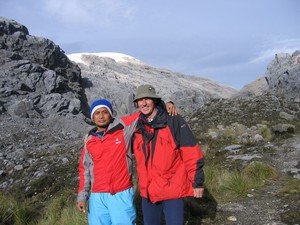
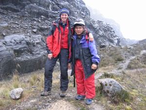
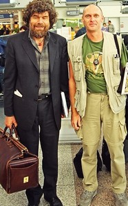

Navigation
- Carstensz Pyramid
- PROGRAMS & SCHEDULE
- Our most imporant expeditions
- LAST CARSTENSZ REFERENCIES
- History of climbing the summit
Legendary Carstensz climbers
- Seven Summits
- 7 Summits - History
- 7 faces of Carstensz Pyramid
- Photos from climbing
- The nature and flora
- Trekking around Carstensz
- Climbing routes to the summit
- 7summits Carstensz best Base camp
- The Tribes and People
- Climate and weather
- Climbing permits
- How to go
- The Highest Mountain of Papua New Guinea
- Why to go with us
- Malaria
- Wrote about us
- References
- Links
- Contact us
- Download


Legends of the Carstensz Pyramid (Puncak Jaya)
It is not at all easy to get to the Carstensz Pyramid. The official statistics say that Carstensz did not climb more than a little bit over 100 climbers (year 2005). Despite this low number, the list includes names of some the famous mountaineering "celebrities. Also Reinhold Messner has left his footprint in its snow and mud.
Heinrich Harrer
He was the first man on earth to climb the Carstensz Pyramid in 1962. After he returned he wrote a book called „I am coming from the stone age“. He uttered these words on Papua:
„On Aigera I wanted to test my skills, in Himalayas I got to know loneliness, in Tibet unusual people. On the New Guinea Island I found everything altogether.“ (Heinrich Harrer, Austrian legendary climber)
Heinrich Harrer with Dalai Lama Photo©Alfred Eder

Heinrich Harrer with Dalai Lama Photo©Alferd Eder
Heinrich Harrer died on January 7, 2006 in the age of 93. He was good friend of Dalai Lama
Ripto Mulyono
In 2005 he reached the top of the Carstensz pyramid twenty times. He is a member of the Indonesian national climbing team, and he gave „training lessons“ to his friend Frenky Kowass on climbing Carstensz.

Ripto Mulyono with Petr Jahoda in Base Camp of Carstensz Pyramid, Nga Pulu in the background Photo©Wahiu Wening
Frenky Kowass
He installed first fixed ropes on the Normal Route of Carstensz Pyramid

Frenky Kowass with Petr Jahoda in Base Camp of Carstensz Pyramid Photo©Miroslav Caban
Reinhold Messner

Reinhold Messner with Petr Jahoda Photo©Jan Novák (the Chair of Czech climbing association)
Reinhold Messner, the first man who surmounted all the Eight-Thousanders, is a climbing legend. His successes needn't be reminded. The reason why he is so important in relation to Carstensz Pyramid is not because of an unusual climbing performance, but because of a dispute he started around Carstensz Pyramid. Reinhold Messner included this mountain into the Dick Bass ? [Seven summits project]:[seven-summits.html]. Messner now strives for leaving out the Australian mountain Mt. Kosciusko from the project and replacing it by Carstensz Pyramid. He finished climbing the Seven summits as a second climber, after Dick Bass.